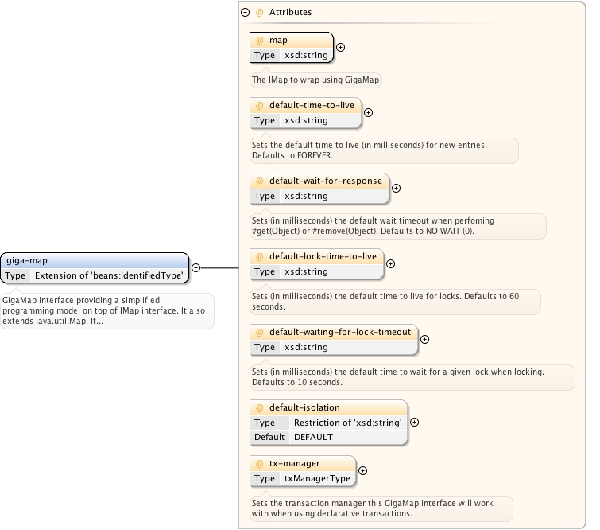
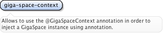
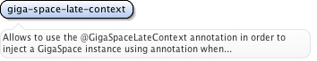

<xsd:element name="annotation-support"><xsd:annotation><xsd:documentation>Allows to use different annotation based injection and configuration.</xsd:documentation></xsd:annotation></xsd:element>
<xsd:element name="space"><xsd:annotation><xsd:documentation source="java:org.openspaces.core.space.UrlSpaceFactoryBean">A space factory bean that creates a space (IJSpace) based on a url and additional settings.</xsd:documentation><xsd:appinfo><tool:annotation><tool:exports type="com.j_spaces.core.IJSpace"/></tool:annotation></xsd:appinfo></xsd:annotation><xsd:complexType><xsd:complexContent><xsd:extension base="beans:identifiedType"><xsd:choice minOccurs="0" maxOccurs="unbounded"><xsd:element name="security" minOccurs="0" maxOccurs="1"><xsd:complexType><xsd:attribute name="username" type="xsd:string"/><xsd:attribute name="password" type="xsd:string"/><xsd:attribute name="user-details" type="xsd:string"><xsd:annotation><xsd:documentation>Deprecated since 9.5.1 - use credentials-provider attribute instead.</xsd:documentation></xsd:annotation></xsd:attribute><xsd:attribute name="credentials-provider" type="xsd:string"/><xsd:attribute name="secured" type="xsd:string"/><!-- TODO: remove --><xsd:attribute name="encrypted" type="xsd:string"/><!-- TODO: remove --><xsd:attribute name="permissions" type="xsd:string"/></xsd:complexType></xsd:element><xsd:element name="all-in-cache-policy"/><xsd:element name="lru-cache-policy"><xsd:complexType><xsd:attribute name="size" type="xsd:string" use="optional"><xsd:annotation><xsd:documentation>The size of the cache.</xsd:documentation></xsd:annotation></xsd:attribute><xsd:attribute name="initialLoadPercentage" type="xsd:string" use="optional"><xsd:annotation><xsd:documentation>When a space is running in a persistent mode (i.e. using the HibernateDataSource implementation), The initial_load sets the % of the space cache data to be loaded (default is 50%) maximum size. To disable this initial load phase, you should configure the initial_load value to be 0.</xsd:documentation></xsd:annotation></xsd:attribute></xsd:complexType></xsd:element><xsd:element name="custom-cache-policy"><xsd:complexType><xsd:attribute name="space-eviction-strategy" type="xsd:string" use="required"><xsd:annotation><xsd:documentation source="java:com.gigaspaces.server.eviction.SpaceEvictionStrategy">The bean name which represent the space eviction strategy class you want to use as your space eviction policy. The class should extend com.gigaspaces.server.eviction.SpaceEvictionStrategy.</xsd:documentation><xsd:appinfo><tool:annotation kind="ref"><tool:expected-type type="com.gigaspaces.server.eviction.SpaceEvictionStrategy"/></tool:annotation></xsd:appinfo></xsd:annotation></xsd:attribute><xsd:attribute name="size" type="xsd:string" use="optional"><xsd:annotation><xsd:documentation>The size of the cache.</xsd:documentation></xsd:annotation></xsd:attribute><xsd:attribute name="initial-load-percentage" type="xsd:string" use="optional"><xsd:annotation><xsd:documentation>When a space is running in a persistent mode (i.e. using the HibernateDataSource implementation), The initial_load sets the % of the space cache data to be loaded (default is 50%) maximum size. To disable this initial load phase, you should configure the initial_load value to be 0.</xsd:documentation></xsd:annotation></xsd:attribute></xsd:complexType></xsd:element><xsd:element name="url-properties" minOccurs="0" maxOccurs="1"><xsd:annotation><xsd:documentation>Sets the url properties. Note, most if not all url level properties can be set using explicit attributes.</xsd:documentation></xsd:annotation><xsd:complexType><xsd:sequence><xsd:element ref="beans:props"/></xsd:sequence><xsd:attribute name="ref" type="xsd:string"><xsd:annotation><xsd:documentation><![CDATA[
A short-cut alternative to a nested "<ref bean='...'/>".
]]></xsd:documentation></xsd:annotation></xsd:attribute></xsd:complexType></xsd:element><xsd:element name="properties" minOccurs="0" maxOccurs="1"><xsd:annotation><xsd:documentation>Sets the properties the IJSpace will be created with (same as parameters). Note, this should not be confused with url-properties. The properties here are the ones referred to as custom properties and allows for example to control the xpath injection to space schema.</xsd:documentation></xsd:annotation><xsd:complexType><xsd:sequence><xsd:element ref="beans:props"/></xsd:sequence><xsd:attribute name="ref" type="xsd:string"><xsd:annotation><xsd:documentation><![CDATA[
A short-cut alternative to a nested "<ref bean='...'/>".
]]></xsd:documentation></xsd:annotation></xsd:attribute></xsd:complexType></xsd:element><xsd:element name="parameters" minOccurs="0" maxOccurs="1"><xsd:annotation><xsd:documentation>Sets the parameters the IJSpace will be created with (same as parameters). Note, this should not be confused with url-properties. The properties here are the ones referred to as custom properties and allows for example to control the xpath injection to space schema.</xsd:documentation></xsd:annotation><xsd:complexType><xsd:sequence><xsd:element ref="beans:map"/></xsd:sequence><xsd:attribute name="ref" type="xsd:string"><xsd:annotation><xsd:documentation><![CDATA[
A short-cut alternative to a nested "<ref bean='...'/>".
]]></xsd:documentation></xsd:annotation></xsd:attribute></xsd:complexType></xsd:element><xsd:element ref="space-filter" minOccurs="0" maxOccurs="unbounded"><xsd:annotation><xsd:documentation source="java:org.openspaces.core.space.filter.SpaceFilterProviderFactory">Allows to inject a "pure" space filter based on SpaceFilterProviderFactory that accepts an ISpaceFilter implementation.</xsd:documentation></xsd:annotation></xsd:element><xsd:element ref="annotation-adapter-filter" minOccurs="0" maxOccurs="unbounded"><xsd:annotation><xsd:documentation source="java:org.openspaces.core.space.filter.AnnotationFilterFactoryBean">Allows to inject a an annotation adapter based on AnnotationFilterFactoryBean that accepts a pure pojo with annotations marking filter methods.</xsd:documentation></xsd:annotation></xsd:element><xsd:element ref="method-adapter-filter" minOccurs="0" maxOccurs="unbounded"><xsd:annotation><xsd:documentation source="java:org.openspaces.core.space.filter.MethodFilterFactoryBean">Allows to inject a a method adapter based on MethodFilterFactoryBean that accepts a pure pojo with method marking filter methods.</xsd:documentation></xsd:annotation></xsd:element><xsd:element name="filter-provider" minOccurs="0" maxOccurs="unbounded"><xsd:annotation><xsd:documentation source="java:org.openspaces.core.space.filter.FilterProviderFactory">Allows to inject a general implementation of FilterProviderFactory.</xsd:documentation></xsd:annotation><xsd:complexType><xsd:attribute name="ref" use="required"><xsd:annotation><xsd:documentation>Reference to the bean.</xsd:documentation><xsd:appinfo><tool:annotation kind="ref"><tool:expected-type type="org.openspaces.core.space.filter.FilterProviderFactory"/></tool:annotation></xsd:appinfo></xsd:annotation></xsd:attribute></xsd:complexType></xsd:element><xsd:element name="replication-filter-provider" minOccurs="0" maxOccurs="1"><xsd:annotation><xsd:documentation source="java:org.openspaces.core.space.filter.replication.ReplicationFilterProviderFactory">Inject an instance of ReplicationFilterProviderFactory allowing to provide a Space replication filter.</xsd:documentation></xsd:annotation><xsd:complexType><xsd:attribute name="ref" use="required"><xsd:annotation><xsd:documentation>Reference to the bean.</xsd:documentation><xsd:appinfo><tool:annotation kind="ref"><tool:expected-type type="org.openspaces.core.space.filter.replication.ReplicationFilterProviderFactory"/></tool:annotation></xsd:appinfo></xsd:annotation></xsd:attribute></xsd:complexType></xsd:element><xsd:element ref="space-replication-filter" minOccurs="0" maxOccurs="1"><xsd:annotation><xsd:documentation source="java:org.openspaces.core.space.filter.replication.DefaultReplicationFilterProviderFactory">Simplified option for injecting space replication filter without using the factory.</xsd:documentation></xsd:annotation></xsd:element><xsd:element ref="space-type"><xsd:annotation><xsd:documentation source="java:com.gigaspaces.metadata.SpaceTypeDescriptor">Defines a single document type for the space</xsd:documentation><xsd:appinfo><tool:annotation kind="ref"><tool:expected-type type="com.gigaspaces.metadata.SpaceTypeDescriptor"/></tool:annotation></xsd:appinfo></xsd:annotation></xsd:element></xsd:choice><xsd:attribute name="url" type="xsd:string" use="required"><xsd:annotation><xsd:documentation>The url the space will be created with.</xsd:documentation></xsd:annotation></xsd:attribute><xsd:attribute name="schema" type="xsd:string"><xsd:annotation><xsd:documentation>The schema name associated with the space.</xsd:documentation></xsd:annotation></xsd:attribute><xsd:attribute name="lookup-groups" type="xsd:string"><xsd:annotation><xsd:documentation>The Jini Lookup Service group to find container or space using multicast (jini protocol). Groups are comma separated list.</xsd:documentation></xsd:annotation></xsd:attribute><xsd:attribute name="lookup-locators" type="xsd:string"><xsd:annotation><xsd:documentation>The Jini Lookup locators for the Space. In the form of: host1:port1,host2:port2.</xsd:documentation></xsd:annotation></xsd:attribute><xsd:attribute name="lookup-timeout" type="xsd:string"><xsd:annotation><xsd:documentation>The max timeout in milliseconds to find a Container or Space using multicast (jini protocol). Defaults to 6000 (i.e. 6 seconds).</xsd:documentation></xsd:annotation></xsd:attribute><xsd:attribute name="versioned" type="xsd:boolean"><xsd:annotation><xsd:documentation>When false, optimistic locking is disabled. Default is true.</xsd:documentation></xsd:annotation></xsd:attribute><xsd:attribute name="no-write-lease" type="xsd:boolean"><xsd:annotation><xsd:documentation>If true - Lease object would not return from the write/writeMultiple operations. Defaults to false.</xsd:documentation></xsd:annotation></xsd:attribute><xsd:attribute name="mirror" type="xsd:boolean"><xsd:annotation><xsd:documentation>When setting this URL property to true it will allow the space to connect to the Mirror service to push its data and operations for asynchronous persistency. Defaults to false.</xsd:documentation></xsd:annotation></xsd:attribute><xsd:attribute name="fifo" type="xsd:boolean"><xsd:annotation><xsd:documentation>Indicates that all take/write operations be conducted in FIFO mode. Default is false.</xsd:documentation></xsd:annotation></xsd:attribute><xsd:attribute name="register-for-space-mode-notifications" type="xsd:boolean"><xsd:annotation><xsd:documentation>Indicates that this space will register for space mode notifications. Default behavior (if the flag was not set) will register to primary backup notification if the space was found using an embedded protocol, and will not register for notification if the space was found using rmi or jini protocols.</xsd:documentation></xsd:annotation></xsd:attribute><xsd:attribute name="external-data-source" type="xsd:string"><xsd:annotation><xsd:documentation source="java:com.gigaspaces.datasource.ManagedDataSource">Allows to provide a Space external data source reference. Deprecated since 9.5 - use the 'space-data-source' and 'space-sync-endpoint' attributes instead.</xsd:documentation><xsd:appinfo><tool:annotation kind="ref"><tool:expected-type type="com.gigaspaces.datasource.ManagedDataSource"/></tool:annotation></xsd:appinfo></xsd:annotation></xsd:attribute><xsd:attribute name="space-data-source" type="xsd:string"><xsd:annotation><xsd:documentation source="java:com.gigaspaces.datasource.SpaceDataSource">Allows to provide a Space data source reference.</xsd:documentation><xsd:appinfo><tool:annotation kind="ref"><tool:expected-type type="com.gigaspaces.datasource.SpaceDataSource"/></tool:annotation></xsd:appinfo></xsd:annotation></xsd:attribute><xsd:attribute name="space-sync-endpoint" type="xsd:string"><xsd:annotation><xsd:documentation source="java:com.gigaspaces.sync.SpaceSynchronizationEndpoint">Allows to provide a Space synchronization endpoint reference.</xsd:documentation><xsd:appinfo><tool:annotation kind="ref"><tool:expected-type type="com.gigaspaces.sync.SpaceSynchronizationEndpoint"/></tool:annotation></xsd:appinfo></xsd:annotation></xsd:attribute><xsd:attribute name="enable-member-alive-indicator" type="xsd:boolean"><xsd:annotation><xsd:documentation>Should this Space bean control if the cluster member is alive or not. Defaults to true if the Space started is an embedded Space, and false if the it is connected to a remote Space.</xsd:documentation></xsd:annotation></xsd:attribute><xsd:attribute name="gateway-targets" type="gatewayTargetsRefType"><xsd:annotation><xsd:documentation>A gateway factory bean that creates gateway replication targets for a space.</xsd:documentation><xsd:appinfo><tool:annotation kind="ref"><tool:expected-type type="org.openspaces.core.gateway.GatewayTargetsFactoryBean"/></tool:annotation></xsd:appinfo></xsd:annotation></xsd:attribute></xsd:extension></xsd:complexContent></xsd:complexType></xsd:element>
<xsd:element name="lru-cache-policy"><xsd:complexType><xsd:attribute name="size" type="xsd:string" use="optional"><xsd:annotation><xsd:documentation>The size of the cache.</xsd:documentation></xsd:annotation></xsd:attribute><xsd:attribute name="initialLoadPercentage" type="xsd:string" use="optional"><xsd:annotation><xsd:documentation>When a space is running in a persistent mode (i.e. using the HibernateDataSource implementation), The initial_load sets the % of the space cache data to be loaded (default is 50%) maximum size. To disable this initial load phase, you should configure the initial_load value to be 0.</xsd:documentation></xsd:annotation></xsd:attribute></xsd:complexType></xsd:element>
<xsd:element name="custom-cache-policy"><xsd:complexType><xsd:attribute name="space-eviction-strategy" type="xsd:string" use="required"><xsd:annotation><xsd:documentation source="java:com.gigaspaces.server.eviction.SpaceEvictionStrategy">The bean name which represent the space eviction strategy class you want to use as your space eviction policy. The class should extend com.gigaspaces.server.eviction.SpaceEvictionStrategy.</xsd:documentation><xsd:appinfo><tool:annotation kind="ref"><tool:expected-type type="com.gigaspaces.server.eviction.SpaceEvictionStrategy"/></tool:annotation></xsd:appinfo></xsd:annotation></xsd:attribute><xsd:attribute name="size" type="xsd:string" use="optional"><xsd:annotation><xsd:documentation>The size of the cache.</xsd:documentation></xsd:annotation></xsd:attribute><xsd:attribute name="initial-load-percentage" type="xsd:string" use="optional"><xsd:annotation><xsd:documentation>When a space is running in a persistent mode (i.e. using the HibernateDataSource implementation), The initial_load sets the % of the space cache data to be loaded (default is 50%) maximum size. To disable this initial load phase, you should configure the initial_load value to be 0.</xsd:documentation></xsd:annotation></xsd:attribute></xsd:complexType></xsd:element>
<xsd:element name="url-properties" minOccurs="0" maxOccurs="1"><xsd:annotation><xsd:documentation>Sets the url properties. Note, most if not all url level properties can be set using explicit attributes.</xsd:documentation></xsd:annotation><xsd:complexType><xsd:sequence><xsd:element ref="beans:props"/></xsd:sequence><xsd:attribute name="ref" type="xsd:string"><xsd:annotation><xsd:documentation><![CDATA[
A short-cut alternative to a nested "<ref bean='...'/>".
]]></xsd:documentation></xsd:annotation></xsd:attribute></xsd:complexType></xsd:element>
<xsd:element name="properties" minOccurs="0" maxOccurs="1"><xsd:annotation><xsd:documentation>Sets the properties the IJSpace will be created with (same as parameters). Note, this should not be confused with url-properties. The properties here are the ones referred to as custom properties and allows for example to control the xpath injection to space schema.</xsd:documentation></xsd:annotation><xsd:complexType><xsd:sequence><xsd:element ref="beans:props"/></xsd:sequence><xsd:attribute name="ref" type="xsd:string"><xsd:annotation><xsd:documentation><![CDATA[
A short-cut alternative to a nested "<ref bean='...'/>".
]]></xsd:documentation></xsd:annotation></xsd:attribute></xsd:complexType></xsd:element>
<xsd:element name="parameters" minOccurs="0" maxOccurs="1"><xsd:annotation><xsd:documentation>Sets the parameters the IJSpace will be created with (same as parameters). Note, this should not be confused with url-properties. The properties here are the ones referred to as custom properties and allows for example to control the xpath injection to space schema.</xsd:documentation></xsd:annotation><xsd:complexType><xsd:sequence><xsd:element ref="beans:map"/></xsd:sequence><xsd:attribute name="ref" type="xsd:string"><xsd:annotation><xsd:documentation><![CDATA[
A short-cut alternative to a nested "<ref bean='...'/>".
]]></xsd:documentation></xsd:annotation></xsd:attribute></xsd:complexType></xsd:element>
<xsd:element name="space-filter"><xsd:annotation><xsd:documentation source="java:org.openspaces.core.space.filter.SpaceFilterProviderFactory">A FilterProvider factory that accepts a concrete ISpaceFilter implementation in addition to all the operation codes it will listen to.</xsd:documentation><xsd:appinfo><tool:annotation><tool:exports type="org.openspaces.core.space.filter.SpaceFilterProviderFactory"/></tool:annotation></xsd:appinfo></xsd:annotation><xsd:complexType><xsd:complexContent><xsd:extension base="baseFilterProviderType"><xsd:sequence><xsd:element name="operation" minOccurs="1" maxOccurs="unbounded"><xsd:annotation><xsd:documentation>The operation code the filter will be registered to. Operation code stands for a specfic operation the space will perform, for example, before write.</xsd:documentation></xsd:annotation><xsd:complexType><xsd:attribute name="code" type="xsd:string" use="optional"><xsd:annotation><xsd:documentation>The operation code (number) the filter will be registered to. Operation code stands for a specific operation the space will perform, for example, before write.</xsd:documentation></xsd:annotation></xsd:attribute><xsd:attribute name="code-name" use="optional"><xsd:annotation><xsd:documentation>The operation code (name) the filter will be registered to. Operation code stands for a specific operation the space will perform, for example, before-write.</xsd:documentation></xsd:annotation><xsd:simpleType><xsd:restriction base="xsd:string"><xsd:enumeration value="before-write"/><xsd:enumeration value="after-write"/><xsd:enumeration value="before-read"/><xsd:enumeration value="after-read"/><xsd:enumeration value="before-take"/><xsd:enumeration value="after-take"/><xsd:enumeration value="before-notify"/><xsd:enumeration value="before-clean-space"/><xsd:enumeration value="before-authentication"/><xsd:enumeration value="before-update"/><xsd:enumeration value="after-update"/><xsd:enumeration value="before-execute"/><xsd:enumeration value="after-execute"/><xsd:enumeration value="before-read-multiple"/><xsd:enumeration value="after-read-multiple"/><xsd:enumeration value="before-take-multiple"/><xsd:enumeration value="after-take-multiple"/><xsd:enumeration value="before-notify-trigger"/><xsd:enumeration value="after-notify-trigger"/><xsd:enumeration value="before-all-notify-trigger"/><xsd:enumeration value="after-all-notify-trigger"/><xsd:enumeration value="before-remove-by-lease"/><xsd:enumeration value="after-remove-by-lease"/></xsd:restriction></xsd:simpleType></xsd:attribute></xsd:complexType></xsd:element></xsd:sequence></xsd:extension></xsd:complexContent></xsd:complexType></xsd:element>
<xsd:element name="operation" minOccurs="1" maxOccurs="unbounded"><xsd:annotation><xsd:documentation>The operation code the filter will be registered to. Operation code stands for a specfic operation the space will perform, for example, before write.</xsd:documentation></xsd:annotation><xsd:complexType><xsd:attribute name="code" type="xsd:string" use="optional"><xsd:annotation><xsd:documentation>The operation code (number) the filter will be registered to. Operation code stands for a specific operation the space will perform, for example, before write.</xsd:documentation></xsd:annotation></xsd:attribute><xsd:attribute name="code-name" use="optional"><xsd:annotation><xsd:documentation>The operation code (name) the filter will be registered to. Operation code stands for a specific operation the space will perform, for example, before-write.</xsd:documentation></xsd:annotation><xsd:simpleType><xsd:restriction base="xsd:string"><xsd:enumeration value="before-write"/><xsd:enumeration value="after-write"/><xsd:enumeration value="before-read"/><xsd:enumeration value="after-read"/><xsd:enumeration value="before-take"/><xsd:enumeration value="after-take"/><xsd:enumeration value="before-notify"/><xsd:enumeration value="before-clean-space"/><xsd:enumeration value="before-authentication"/><xsd:enumeration value="before-update"/><xsd:enumeration value="after-update"/><xsd:enumeration value="before-execute"/><xsd:enumeration value="after-execute"/><xsd:enumeration value="before-read-multiple"/><xsd:enumeration value="after-read-multiple"/><xsd:enumeration value="before-take-multiple"/><xsd:enumeration value="after-take-multiple"/><xsd:enumeration value="before-notify-trigger"/><xsd:enumeration value="after-notify-trigger"/><xsd:enumeration value="before-all-notify-trigger"/><xsd:enumeration value="after-all-notify-trigger"/><xsd:enumeration value="before-remove-by-lease"/><xsd:enumeration value="after-remove-by-lease"/></xsd:restriction></xsd:simpleType></xsd:attribute></xsd:complexType></xsd:element>
<xsd:element name="annotation-adapter-filter"><xsd:annotation><xsd:documentation source="java:org.openspaces.core.space.filter.AnnotationFilterFactoryBean">A FilterProvider factory that accepts a Pojo filter with annotation markers as to which filter operation to listen to. The available annotations are the different annotations found within this package with either the Before prefix or the After prefix (for example: BeforeWrite and AfterWrite). Filter lifecycle methods can be marked using OnFilterInit and OnFilterClose annotations.</xsd:documentation><xsd:appinfo><tool:annotation><tool:exports type="org.openspaces.core.space.filter.AnnotationFilterFactoryBean"/></tool:annotation></xsd:appinfo></xsd:annotation><xsd:complexType><xsd:complexContent><xsd:extension base="baseFilterProviderType"/></xsd:complexContent></xsd:complexType></xsd:element>
<xsd:element name="method-adapter-filter"><xsd:annotation><xsd:documentation source="java:org.openspaces.core.space.filter.MethodFilterFactoryBean">A FilterProvider factory that accepts a Pojo filter with different operation callbacks that are marked using this factory. For each available operation there is an attribute that accepts the method name to be invoked if the operation happened. Not setting a callback means that this filter will not listen to the mentioned operation. For example, if the filter has a method called doSomethingBeforeWrite, the attribute before-write will need to be set with name doSomethingBeforeWrite.</xsd:documentation><xsd:appinfo><tool:annotation><tool:exports type="org.openspaces.core.space.filter.MethodFilterFactoryBean"/></tool:annotation></xsd:appinfo></xsd:annotation><xsd:complexType><xsd:complexContent><xsd:extension base="baseFilterProviderType"><xsd:attribute name="filter-init" type="xsd:string"/><xsd:attribute name="filter-close" type="xsd:string"/><xsd:attribute name="before-write" type="xsd:string"/><xsd:attribute name="after-write" type="xsd:string"/><xsd:attribute name="before-read" type="xsd:string"/><xsd:attribute name="after-read" type="xsd:string"/><xsd:attribute name="before-take" type="xsd:string"/><xsd:attribute name="after-take" type="xsd:string"/><xsd:attribute name="before-notify" type="xsd:string"/><xsd:attribute name="before-clean-space" type="xsd:string"/><xsd:attribute name="before-update" type="xsd:string"/><xsd:attribute name="after-update" type="xsd:string"/><xsd:attribute name="before-read-multiple" type="xsd:string"/><xsd:attribute name="after-read-multiple" type="xsd:string"/><xsd:attribute name="before-take-multiple" type="xsd:string"/><xsd:attribute name="after-take-multiple" type="xsd:string"/><xsd:attribute name="before-notify-trigger" type="xsd:string"/><xsd:attribute name="after-notify-trigger" type="xsd:string"/><xsd:attribute name="before-all-notify-trigger" type="xsd:string"/><xsd:attribute name="after-all-notify-trigger" type="xsd:string"/><xsd:attribute name="before-remove-by-lease" type="xsd:string"/><xsd:attribute name="after-remove-by-lease" type="xsd:string"/><xsd:attribute name="before-execute" type="xsd:string"/><xsd:attribute name="after-execute" type="xsd:string"/><xsd:attribute name="before-authentication" type="xsd:string"/></xsd:extension></xsd:complexContent></xsd:complexType></xsd:element>
<xsd:element name="filter-provider" minOccurs="0" maxOccurs="unbounded"><xsd:annotation><xsd:documentation source="java:org.openspaces.core.space.filter.FilterProviderFactory">Allows to inject a general implementation of FilterProviderFactory.</xsd:documentation></xsd:annotation><xsd:complexType><xsd:attribute name="ref" use="required"><xsd:annotation><xsd:documentation>Reference to the bean.</xsd:documentation><xsd:appinfo><tool:annotation kind="ref"><tool:expected-type type="org.openspaces.core.space.filter.FilterProviderFactory"/></tool:annotation></xsd:appinfo></xsd:annotation></xsd:attribute></xsd:complexType></xsd:element>
<xsd:element name="replication-filter-provider" minOccurs="0" maxOccurs="1"><xsd:annotation><xsd:documentation source="java:org.openspaces.core.space.filter.replication.ReplicationFilterProviderFactory">Inject an instance of ReplicationFilterProviderFactory allowing to provide a Space replication filter.</xsd:documentation></xsd:annotation><xsd:complexType><xsd:attribute name="ref" use="required"><xsd:annotation><xsd:documentation>Reference to the bean.</xsd:documentation><xsd:appinfo><tool:annotation kind="ref"><tool:expected-type type="org.openspaces.core.space.filter.replication.ReplicationFilterProviderFactory"/></tool:annotation></xsd:appinfo></xsd:annotation></xsd:attribute></xsd:complexType></xsd:element>
<xsd:element name="space-type"><xsd:annotation><xsd:documentation source="java:org.openspaces.core.config.GigaSpaceDocumentTypeDescriptorFactoryBean">Defines a custom space type</xsd:documentation><xsd:appinfo><tool:annotation><tool:exports type="com.gigaspaces.metadata.SpaceTypeDescriptor"/></tool:annotation></xsd:appinfo></xsd:annotation><xsd:complexType><xsd:complexContent><xsd:extension base="beans:identifiedType"><xsd:sequence><xsd:element name="id" minOccurs="0" maxOccurs="1"><xsd:annotation><xsd:documentation>The id property definition.</xsd:documentation></xsd:annotation><xsd:complexType><xsd:attribute name="property" type="xsd:string" use="required"><xsd:annotation><xsd:documentation>Id property name.</xsd:documentation></xsd:annotation></xsd:attribute><xsd:attribute name="auto-generate" type="xsd:boolean"><xsd:annotation><xsd:documentation>Id autoGenerate type.</xsd:documentation></xsd:annotation></xsd:attribute></xsd:complexType></xsd:element><xsd:element name="routing" minOccurs="0" maxOccurs="1"><xsd:annotation><xsd:documentation>The routing property definition.</xsd:documentation></xsd:annotation><xsd:complexType><xsd:attribute name="property" type="xsd:string" use="required"><xsd:annotation><xsd:documentation>Routing property name.</xsd:documentation></xsd:annotation></xsd:attribute></xsd:complexType></xsd:element><xsd:element name="basic-index" minOccurs="0" maxOccurs="unbounded"><xsd:annotation><xsd:documentation>Basic equality index definition.</xsd:documentation></xsd:annotation><xsd:complexType><xsd:attribute name="path" type="xsd:string" use="required"><xsd:annotation><xsd:documentation>The index path.</xsd:documentation></xsd:annotation></xsd:attribute><xsd:attribute name="unique" type="xsd:boolean" use="optional"><xsd:annotation><xsd:documentation>The index unique indicator.</xsd:documentation></xsd:annotation></xsd:attribute></xsd:complexType></xsd:element><xsd:element name="extended-index" minOccurs="0" maxOccurs="unbounded"><xsd:annotation><xsd:documentation>Basic equality index definition.</xsd:documentation></xsd:annotation><xsd:complexType><xsd:attribute name="path" type="xsd:string" use="required"><xsd:annotation><xsd:documentation>The index path.</xsd:documentation></xsd:annotation></xsd:attribute><xsd:attribute name="unique" type="xsd:boolean" use="optional"><xsd:annotation><xsd:documentation>The index unique indicator.</xsd:documentation></xsd:annotation></xsd:attribute></xsd:complexType></xsd:element><xsd:element name="compound-index" minOccurs="0" maxOccurs="unbounded"><xsd:annotation><xsd:documentation>compound index definition.</xsd:documentation></xsd:annotation><xsd:complexType><xsd:attribute name="paths" type="xsd:string" use="required"><xsd:annotation><xsd:documentation>The paths of the index segments, seperated by blank or comma.</xsd:documentation></xsd:annotation></xsd:attribute><xsd:attribute name="unique" type="xsd:boolean" use="optional"><xsd:annotation><xsd:documentation>The index unique indicator.</xsd:documentation></xsd:annotation></xsd:attribute></xsd:complexType></xsd:element><xsd:element name="document-class" minOccurs="0" maxOccurs="1"><xsd:annotation><xsd:documentation>Wrapper class for the document.</xsd:documentation></xsd:annotation></xsd:element><xsd:element name="fifo-grouping-property" minOccurs="0" maxOccurs="1"><xsd:annotation><xsd:documentation>The fifo grouping property definition.</xsd:documentation></xsd:annotation><xsd:complexType><xsd:attribute name="path" type="xsd:string" use="required"><xsd:annotation><xsd:documentation>Fifo grouping property path.</xsd:documentation></xsd:annotation></xsd:attribute></xsd:complexType></xsd:element><xsd:element name="fifo-grouping-index" minOccurs="0" maxOccurs="unbounded"><xsd:annotation><xsd:documentation>Fifo grouping index definition.</xsd:documentation></xsd:annotation><xsd:complexType><xsd:attribute name="path" type="xsd:string" use="required"><xsd:annotation><xsd:documentation>The fifo grouping index path.</xsd:documentation></xsd:annotation></xsd:attribute></xsd:complexType></xsd:element></xsd:sequence><xsd:attribute name="type-name" type="xsd:string" use="required"><xsd:annotation><xsd:documentation>The type name.</xsd:documentation></xsd:annotation></xsd:attribute><xsd:attribute name="replicable" type="xsd:boolean" use="optional"><xsd:annotation><xsd:documentation>Indicator whether this type is replicable or not.</xsd:documentation></xsd:annotation></xsd:attribute><xsd:attribute name="optimistic-lock" type="xsd:boolean" use="optional"><xsd:annotation><xsd:documentation>Indicator whether this type is using optimistic locking.</xsd:documentation></xsd:annotation></xsd:attribute><xsd:attribute name="fifo-support" type="xsd:string" use="optional"><xsd:annotation><xsd:documentation>Indicator the fifo support for this type.</xsd:documentation></xsd:annotation></xsd:attribute><xsd:attribute name="storage-type" use="optional"><xsd:annotation><xsd:documentation>The storage type of the space-type</xsd:documentation></xsd:annotation><xsd:simpleType><xsd:annotation><xsd:documentation>Storage type possible types</xsd:documentation></xsd:annotation><xsd:restriction base="xsd:string"><xsd:enumeration value="default"/><xsd:enumeration value="object"/><xsd:enumeration value="binary"/><xsd:enumeration value="compressed"/></xsd:restriction></xsd:simpleType></xsd:attribute></xsd:extension></xsd:complexContent></xsd:complexType></xsd:element>
<xsd:element name="compound-index" minOccurs="0" maxOccurs="unbounded"><xsd:annotation><xsd:documentation>compound index definition.</xsd:documentation></xsd:annotation><xsd:complexType><xsd:attribute name="paths" type="xsd:string" use="required"><xsd:annotation><xsd:documentation>The paths of the index segments, seperated by blank or comma.</xsd:documentation></xsd:annotation></xsd:attribute><xsd:attribute name="unique" type="xsd:boolean" use="optional"><xsd:annotation><xsd:documentation>The index unique indicator.</xsd:documentation></xsd:annotation></xsd:attribute></xsd:complexType></xsd:element>
<xsd:element name="document-class" minOccurs="0" maxOccurs="1"><xsd:annotation><xsd:documentation>Wrapper class for the document.</xsd:documentation></xsd:annotation></xsd:element>
<xsd:element name="mirror"><xsd:annotation><xsd:documentation source="java:org.openspaces.core.space.UrlSpaceFactoryBean">A space factory bean that creates a mirror space based on a url and additional settings.</xsd:documentation><xsd:appinfo><tool:annotation><tool:exports type="com.j_spaces.core.IJSpace"/></tool:annotation></xsd:appinfo></xsd:annotation><xsd:complexType><xsd:complexContent><xsd:extension base="beans:identifiedType"><xsd:choice minOccurs="1" maxOccurs="unbounded"><xsd:element name="source-space" minOccurs="1" maxOccurs="1"><xsd:complexType><xsd:attribute name="name" type="xsd:string" use="required"><xsd:annotation><xsd:documentation>The name of the source space that connects to this mirror.</xsd:documentation></xsd:annotation></xsd:attribute><xsd:attribute name="partitions" type="xsd:string" use="required"><xsd:annotation><xsd:documentation>The number of partitions the source space has.</xsd:documentation></xsd:annotation></xsd:attribute><xsd:attribute name="backups" type="xsd:string" use="required"><xsd:annotation><xsd:documentation>The number of backups each partition on the source space has.</xsd:documentation></xsd:annotation></xsd:attribute></xsd:complexType></xsd:element><xsd:element name="external-data-source" type="edsType" minOccurs="0" maxOccurs="1"><xsd:annotation><xsd:documentation source="java:com.gigaspaces.datasource.ManagedDataSource">Allows to provide a Space external data source reference.</xsd:documentation></xsd:annotation></xsd:element><xsd:element name="properties" minOccurs="0" maxOccurs="1"><xsd:annotation><xsd:documentation>Sets the properties the IJSpace will be created with (same as parameters). Note, this should not be confused with url-properties. The properties here are the ones referred to as custom properties and allows for example to control the xpath injection to space schema.</xsd:documentation></xsd:annotation><xsd:complexType><xsd:sequence><xsd:element ref="beans:props"/></xsd:sequence><xsd:attribute name="ref" type="xsd:string"><xsd:annotation><xsd:documentation><![CDATA[
A short-cut alternative to a nested "<ref bean='...'/>".
]]></xsd:documentation></xsd:annotation></xsd:attribute></xsd:complexType></xsd:element><xsd:element name="tx-support" minOccurs="0" maxOccurs="1"><xsd:annotation><xsd:documentation>Configures distributed transaction processing configuration for the Mirror component.</xsd:documentation></xsd:annotation><xsd:complexType><xsd:attribute name="dist-tx-wait-timeout-millis" type="xsd:string" use="optional"><xsd:annotation><xsd:documentation>Sets the timeout (in milliseconds) for distributed transaction partial participants commit.</xsd:documentation></xsd:annotation></xsd:attribute><xsd:attribute name="dist-tx-wait-for-opers" type="xsd:string" use="optional"><xsd:annotation><xsd:documentation>Sets the number of operations to wait until distributed transaction partial participants commit.</xsd:documentation></xsd:annotation></xsd:attribute><xsd:attribute name="monitor-pending-opers-memory" type="xsd:boolean" use="optional"><xsd:annotation><xsd:documentation>Sets whether pending operations queue memory monitoring is enabled.</xsd:documentation></xsd:annotation></xsd:attribute></xsd:complexType></xsd:element></xsd:choice><xsd:attribute name="url" type="xsd:string" use="required"><xsd:annotation><xsd:documentation>The url the space will be created with.</xsd:documentation></xsd:annotation></xsd:attribute><xsd:attribute name="external-data-source" type="xsd:string"><xsd:annotation><xsd:documentation source="java:com.gigaspaces.datasource.ManagedDataSource">Allows to provide a Space external data source reference.</xsd:documentation><xsd:appinfo><tool:annotation kind="ref"><tool:expected-type type="com.gigaspaces.datasource.ManagedDataSource"/></tool:annotation></xsd:appinfo></xsd:annotation></xsd:attribute><xsd:attribute name="space-sync-endpoint" type="xsd:string"><xsd:annotation><xsd:documentation source="java:com.gigaspaces.sync.SpaceSynchronizationEndpoint">Allows to provide a Space synchronization endpoint reference.</xsd:documentation><xsd:appinfo><tool:annotation kind="ref"><tool:expected-type type="com.gigaspaces.sync.SpaceSynchronizationEndpoint"/></tool:annotation></xsd:appinfo></xsd:annotation></xsd:attribute><xsd:attribute name="operation-grouping" use="optional"><xsd:annotation><xsd:documentation>The url the space will be created with.</xsd:documentation></xsd:annotation><xsd:simpleType><xsd:restriction base="xsd:string"><xsd:enumeration value="group-by-space-transaction"/><xsd:enumeration value="group-by-replication-bulk"/></xsd:restriction></xsd:simpleType></xsd:attribute></xsd:extension></xsd:complexContent></xsd:complexType></xsd:element>
<xsd:element name="source-space" minOccurs="1" maxOccurs="1"><xsd:complexType><xsd:attribute name="name" type="xsd:string" use="required"><xsd:annotation><xsd:documentation>The name of the source space that connects to this mirror.</xsd:documentation></xsd:annotation></xsd:attribute><xsd:attribute name="partitions" type="xsd:string" use="required"><xsd:annotation><xsd:documentation>The number of partitions the source space has.</xsd:documentation></xsd:annotation></xsd:attribute><xsd:attribute name="backups" type="xsd:string" use="required"><xsd:annotation><xsd:documentation>The number of backups each partition on the source space has.</xsd:documentation></xsd:annotation></xsd:attribute></xsd:complexType></xsd:element>
<xsd:element name="external-data-source" type="edsType" minOccurs="0" maxOccurs="1"><xsd:annotation><xsd:documentation source="java:com.gigaspaces.datasource.ManagedDataSource">Allows to provide a Space external data source reference.</xsd:documentation></xsd:annotation></xsd:element>
<xsd:element name="properties" minOccurs="0" maxOccurs="1"><xsd:annotation><xsd:documentation>Sets the properties the IJSpace will be created with (same as parameters). Note, this should not be confused with url-properties. The properties here are the ones referred to as custom properties and allows for example to control the xpath injection to space schema.</xsd:documentation></xsd:annotation><xsd:complexType><xsd:sequence><xsd:element ref="beans:props"/></xsd:sequence><xsd:attribute name="ref" type="xsd:string"><xsd:annotation><xsd:documentation><![CDATA[
A short-cut alternative to a nested "<ref bean='...'/>".
]]></xsd:documentation></xsd:annotation></xsd:attribute></xsd:complexType></xsd:element>
<xsd:element name="tx-support" minOccurs="0" maxOccurs="1"><xsd:annotation><xsd:documentation>Configures distributed transaction processing configuration for the Mirror component.</xsd:documentation></xsd:annotation><xsd:complexType><xsd:attribute name="dist-tx-wait-timeout-millis" type="xsd:string" use="optional"><xsd:annotation><xsd:documentation>Sets the timeout (in milliseconds) for distributed transaction partial participants commit.</xsd:documentation></xsd:annotation></xsd:attribute><xsd:attribute name="dist-tx-wait-for-opers" type="xsd:string" use="optional"><xsd:annotation><xsd:documentation>Sets the number of operations to wait until distributed transaction partial participants commit.</xsd:documentation></xsd:annotation></xsd:attribute><xsd:attribute name="monitor-pending-opers-memory" type="xsd:boolean" use="optional"><xsd:annotation><xsd:documentation>Sets whether pending operations queue memory monitoring is enabled.</xsd:documentation></xsd:annotation></xsd:attribute></xsd:complexType></xsd:element>
<xsd:element name="local-cache"><xsd:annotation><xsd:documentation source="java:org.openspaces.core.space.cache.LocalCacheSpaceFactoryBean">In some cases, the memory capacity of an individual application is not capable of holding all the information in the local application memory. When this happens, the desired solution will be to hold only a portion of the information in the application's memory and the rest in a separate process(s). This mode is also known as two-level cache. In this mode, the cache is divided into two components, local cache and master cache. The local cache always resides in the physical address space of the application and the master cache runs in a different process. The master cache is used to share data among the different embedded local caches running within other application instances. In this mode, when a read/get operation is called, a matching object is first looked up in the local embedded cache. If the object is not found in the local cache, it will be searched for in the master cache. If it is not found in the master cache, it will reload the data from the data source. Updates on the central cache will be propagated into all local embedded cache instances in either pull or push mode, using unicast or multicast protocol.</xsd:documentation><xsd:appinfo><tool:annotation><tool:exports type="com.j_spaces.core.IJSpace"/></tool:annotation></xsd:appinfo></xsd:annotation><xsd:complexType><xsd:complexContent><xsd:extension base="beans:identifiedType"><xsd:sequence><xsd:element name="properties" minOccurs="0" maxOccurs="1"><xsd:annotation><xsd:documentation>Sets additional properties for the local cache.</xsd:documentation></xsd:annotation><xsd:complexType><xsd:sequence><xsd:element ref="beans:props"/></xsd:sequence><xsd:attribute name="ref" type="xsd:string"><xsd:annotation><xsd:documentation><![CDATA[
A short-cut alternative to a nested "<ref bean='...'/>".
]]></xsd:documentation></xsd:annotation></xsd:attribute></xsd:complexType></xsd:element></xsd:sequence><xsd:attribute name="space" type="spaceRefType" use="required"><xsd:annotation><xsd:documentation source="java:com.j_spaces.core.IJSpace">The Space to build the local cache on top.</xsd:documentation><xsd:appinfo><tool:annotation kind="ref"><tool:expected-type type="com.j_spaces.core.IJSpace"/></tool:annotation></xsd:appinfo></xsd:annotation></xsd:attribute><xsd:attribute name="max-disconnection-duration" type="xsd:string"><xsd:annotation><xsd:documentation>When the connection between a local cache and remote master space is disrupted, the local cache starts trying to reconnect with the remote space. If the disconnection duration exceeds the max-disconnection-duration, the local cache enters a disconnected state, wherein each operation throws an exception stating the cache is disconnected. When the connection to the remote master space is restored, the local cache state will resume to a connected state.</xsd:documentation></xsd:annotation></xsd:attribute><xsd:attribute name="batch-size" type="xsd:string"><xsd:annotation><xsd:documentation>Determines the threshold batch size for synchronizing the local cache.</xsd:documentation></xsd:annotation></xsd:attribute><xsd:attribute name="batch-timeout" type="xsd:string"><xsd:annotation><xsd:documentation>Determines the threshold batch time for synchronizing the local cache.</xsd:documentation></xsd:annotation></xsd:attribute><xsd:attribute name="max-time-to-live" type="xsd:string"><xsd:annotation><xsd:documentation>The maximum time (in milliseconds) an object will live in the local cache before being evicted.</xsd:documentation></xsd:annotation></xsd:attribute><xsd:attribute name="size" type="xsd:string"><xsd:annotation><xsd:documentation>The size of the local cache.</xsd:documentation></xsd:annotation></xsd:attribute><xsd:attribute name="update-mode"><xsd:annotation><xsd:documentation>Controls how updates are reflected in the local cache.</xsd:documentation></xsd:annotation><xsd:simpleType><xsd:restriction base="xsd:string"><xsd:enumeration value="PULL"><xsd:annotation><xsd:documentation>Each update triggers an invalidation event at every cache instance. The invalidate event marks the object in the local cache instances as invalid. Therefore, an attempt to read this object triggers a reload process in the master space. This configuration is useful in cases where objects are updated frequently, but the updated value is required by the application less frequently.</xsd:documentation></xsd:annotation></xsd:enumeration><xsd:enumeration value="PUSH"><xsd:annotation><xsd:documentation>The master pushes the updates to the local cache, which holds a reference to the same updated object.</xsd:documentation></xsd:annotation></xsd:enumeration><xsd:enumeration value="NONE"><xsd:annotation><xsd:documentation>The local cache will not register for master space updates - If an object is changed in the master space, it will remain stale in the local cache until its lease expires.</xsd:documentation></xsd:annotation></xsd:enumeration></xsd:restriction></xsd:simpleType></xsd:attribute></xsd:extension></xsd:complexContent></xsd:complexType></xsd:element>
<xsd:element name="properties" minOccurs="0" maxOccurs="1"><xsd:annotation><xsd:documentation>Sets additional properties for the local cache.</xsd:documentation></xsd:annotation><xsd:complexType><xsd:sequence><xsd:element ref="beans:props"/></xsd:sequence><xsd:attribute name="ref" type="xsd:string"><xsd:annotation><xsd:documentation><![CDATA[
A short-cut alternative to a nested "<ref bean='...'/>".
]]></xsd:documentation></xsd:annotation></xsd:attribute></xsd:complexType></xsd:element>
<xsd:element name="local-view"><xsd:annotation><xsd:documentation source="java:org.openspaces.core.space.cache.LocalViewSpaceFactoryBean">The space local view proxy maintains a subset of the master space's data, allowing the client to read distributed data without any remote operations. Data is streamed into the client view in an implicit manner - as opposed to local cache data, that is loaded into the client on- demand, and later updated or evicted.</xsd:documentation><xsd:appinfo><tool:annotation><tool:exports type="com.j_spaces.core.IJSpace"/></tool:annotation></xsd:appinfo></xsd:annotation><xsd:complexType><xsd:complexContent><xsd:extension base="beans:identifiedType"><xsd:sequence><xsd:element name="properties" minOccurs="0" maxOccurs="1"><xsd:complexType><xsd:sequence><xsd:element ref="beans:props"/></xsd:sequence><xsd:attribute name="ref" type="xsd:string"><xsd:annotation><xsd:documentation><![CDATA[
A short-cut alternative to a nested "<ref bean='...'/>".
]]></xsd:documentation></xsd:annotation></xsd:attribute></xsd:complexType></xsd:element><xsd:element ref="view-query" minOccurs="1" maxOccurs="unbounded"><xsd:annotation><xsd:documentation>View (SQL) query controlling the data streamed to the local view.</xsd:documentation></xsd:annotation></xsd:element></xsd:sequence><xsd:attribute name="space" type="spaceRefType" use="required"><xsd:annotation><xsd:documentation source="java:com.j_spaces.core.IJSpace">The Space to build the local view on top.</xsd:documentation><xsd:appinfo><tool:annotation kind="ref"><tool:expected-type type="com.j_spaces.core.IJSpace"/></tool:annotation></xsd:appinfo></xsd:annotation></xsd:attribute><xsd:attribute name="max-disconnection-duration" type="xsd:string"><xsd:annotation><xsd:documentation>When the connection between a local view and remote master space is disrupted, the local view starts trying to reconnect with the remote space. If the disconnection duration exceeds the max-disconnection-duration, the local view enters a disconnected state, wherein each operation throws an exception stating the view is disconnected. When the connection to the remote master space is restored, the local view state will resume to a connected state.</xsd:documentation></xsd:annotation></xsd:attribute><xsd:attribute name="batch-size" type="xsd:string"><xsd:annotation><xsd:documentation>Determines the threshold batch size for synchronizing the local view.</xsd:documentation></xsd:annotation></xsd:attribute><xsd:attribute name="batch-timeout" type="xsd:string"><xsd:annotation><xsd:documentation>Determines the threshold batch time for synchronizing the local view.</xsd:documentation></xsd:annotation></xsd:attribute><xsd:attribute name="initial-synchronization-timeout" type="xsd:string"><xsd:annotation><xsd:documentation>Determines the initial synchronization process timeout, once exceeded the process is considered failed and will be retried (Defaults to 5 minutes).</xsd:documentation></xsd:annotation></xsd:attribute></xsd:extension></xsd:complexContent></xsd:complexType></xsd:element>
<xsd:element name="properties" minOccurs="0" maxOccurs="1"><xsd:complexType><xsd:sequence><xsd:element ref="beans:props"/></xsd:sequence><xsd:attribute name="ref" type="xsd:string"><xsd:annotation><xsd:documentation><![CDATA[
A short-cut alternative to a nested "<ref bean='...'/>".
]]></xsd:documentation></xsd:annotation></xsd:attribute></xsd:complexType></xsd:element>
<xsd:element name="giga-space"><xsd:annotation><xsd:documentation source="java:org.openspaces.core.GigaSpaceFactoryBean">GigaSpace interface providing a simplified programming model on top of IJSpace and JavaSpace interfaces. Allows to use declarative transactions and simplified API.</xsd:documentation><xsd:appinfo><tool:annotation><tool:exports type="org.openspaces.core.GigaSpace"/></tool:annotation></xsd:appinfo></xsd:annotation><xsd:complexType><xsd:complexContent><xsd:extension base="beans:identifiedType"><xsd:choice minOccurs="0" maxOccurs="unbounded"><xsd:element ref="space-type"><xsd:annotation><xsd:documentation source="java:com.gigaspaces.metadata.SpaceTypeDescriptor">Defines a single document type for the space</xsd:documentation><xsd:appinfo><tool:annotation kind="ref"><tool:expected-type type="com.gigaspaces.metadata.SpaceTypeDescriptor"/></tool:annotation></xsd:appinfo></xsd:annotation></xsd:element><xsd:element ref="write-modifier"><xsd:annotation><xsd:documentation>Defines a single default write modifier for the space proxy</xsd:documentation></xsd:annotation></xsd:element><xsd:element ref="read-modifier"><xsd:annotation><xsd:documentation>Defines a single default read modifier for the space proxy</xsd:documentation></xsd:annotation></xsd:element><xsd:element ref="change-modifier"><xsd:annotation><xsd:documentation>Defines a single default change modifier for the space proxy</xsd:documentation></xsd:annotation></xsd:element><xsd:element ref="take-modifier"><xsd:annotation><xsd:documentation>Defines a single default take modifier for the space proxy</xsd:documentation></xsd:annotation></xsd:element><xsd:element ref="clear-modifier"><xsd:annotation><xsd:documentation>Defines a single default clear modifier for the space proxy</xsd:documentation></xsd:annotation></xsd:element><xsd:element ref="count-modifier"><xsd:annotation><xsd:documentation>Defines a single default count modifier for the space proxy</xsd:documentation></xsd:annotation></xsd:element></xsd:choice><xsd:attribute name="space" type="spaceRefType" use="required"><xsd:annotation><xsd:documentation source="java:com.j_spaces.core.IJSpace">The IJSpace to wrap using GigaSpace</xsd:documentation><xsd:appinfo><tool:annotation kind="ref"><tool:expected-type type="com.j_spaces.core.IJSpace"/></tool:annotation></xsd:appinfo></xsd:annotation></xsd:attribute><xsd:attribute name="clustered" type="xsd:boolean"><xsd:annotation><xsd:documentation>Cluster flag controlling if this GigaSpace will work with a clustered view of the space or directly with a cluster member. By default if this flag is not set it will be set automatically by this factory. It will be set to true if the space is an embedded one AND the space is not a local cache proxy. It will be set to false otherwise (i.e. the space is not an embedded space OR the space is a local cache proxy).</xsd:documentation></xsd:annotation></xsd:attribute><xsd:attribute name="default-read-timeout" type="xsd:string"><xsd:annotation><xsd:documentation>Sets the default read timeout for #read(Object) and #readIfExists(Object) operations. Default to NO_WAIT.</xsd:documentation></xsd:annotation></xsd:attribute><xsd:attribute name="default-take-timeout" type="xsd:string"><xsd:annotation><xsd:documentation>Sets the default take timeout for #take(Object) and #takeIfExists(Object)} operations. Default to NO_WAIT.</xsd:documentation></xsd:annotation></xsd:attribute><xsd:attribute name="default-write-lease" type="xsd:string"><xsd:annotation><xsd:documentation>Sets the default write lease for write(Object) operation. Default to FOREVER.</xsd:documentation></xsd:annotation></xsd:attribute><xsd:attribute name="default-isolation" default="DEFAULT"><xsd:simpleType><xsd:annotation><xsd:documentation source="java:org.springframework.transaction.annotation.Isolation"><![CDATA[The transaction isolation level.]]></xsd:documentation></xsd:annotation><xsd:restriction base="xsd:string"><xsd:enumeration value="DEFAULT"/><xsd:enumeration value="READ_UNCOMMITTED"/><xsd:enumeration value="READ_COMMITTED"/><xsd:enumeration value="REPEATABLE_READ"/></xsd:restriction></xsd:simpleType></xsd:attribute><xsd:attribute name="tx-manager" type="txManagerType"><xsd:annotation><xsd:documentation>Sets the transaction manager this GigaSpace interface will work with when using declarative transactions.</xsd:documentation><xsd:appinfo><tool:annotation kind="ref"><tool:expected-type type="org.springframework.transaction.PlatformTransactionManager"/></tool:annotation></xsd:appinfo></xsd:annotation></xsd:attribute></xsd:extension></xsd:complexContent></xsd:complexType></xsd:element>
<xsd:element name="write-modifier"><xsd:annotation><xsd:documentation>Defines a single default write modifier for the space proxy</xsd:documentation></xsd:annotation><xsd:complexType><xsd:attribute name="value" use="required"><xsd:simpleType><xsd:annotation><xsd:documentation>The modifier constant name as defined in WriteModifiers</xsd:documentation></xsd:annotation><xsd:restriction base="xsd:string"><xsd:enumeration value="NONE"/><xsd:enumeration value="WRITE_ONLY"/><xsd:enumeration value="UPDATE_ONLY"/><xsd:enumeration value="UPDATE_OR_WRITE"/><xsd:enumeration value="RETURN_PREV_ON_UPDATE"/><xsd:enumeration value="ONE_WAY"/><xsd:enumeration value="MEMORY_ONLY_SEARCH"/><xsd:enumeration value="PARTIAL_UPDATE"/></xsd:restriction></xsd:simpleType></xsd:attribute></xsd:complexType></xsd:element>
<xsd:element name="read-modifier"><xsd:annotation><xsd:documentation>Defines a single default read modifier for the space proxy</xsd:documentation></xsd:annotation><xsd:complexType><xsd:attribute name="value" use="required"><xsd:simpleType><xsd:annotation><xsd:documentation>The modifier constant name as defined in ReadModifiers</xsd:documentation></xsd:annotation><xsd:restriction base="xsd:string"><xsd:enumeration value="NONE"/><xsd:enumeration value="REPEATABLE_READ"/><xsd:enumeration value="READ_COMMITTED"/><xsd:enumeration value="DIRTY_READ"/><xsd:enumeration value="EXCLUSIVE_READ_LOCK"/><xsd:enumeration value="IGNORE_PARTIAL_FAILURE"/><xsd:enumeration value="FIFO"/><xsd:enumeration value="FIFO_GROUPING_POLL"/><xsd:enumeration value="MEMORY_ONLY_SEARCH"/></xsd:restriction></xsd:simpleType></xsd:attribute></xsd:complexType></xsd:element>
<xsd:element name="change-modifier"><xsd:annotation><xsd:documentation>Defines a single default change modifier for the space proxy</xsd:documentation></xsd:annotation><xsd:complexType><xsd:attribute name="value" use="required"><xsd:simpleType><xsd:annotation><xsd:documentation>The modifier constant name as defined in ChangeModifiers</xsd:documentation></xsd:annotation><xsd:restriction base="xsd:string"><xsd:enumeration value="NONE"/><xsd:enumeration value="ONE_WAY"/><xsd:enumeration value="MEMORY_ONLY_SEARCH"/><xsd:enumeration value="RETURN_DETAILED_RESULTS"/></xsd:restriction></xsd:simpleType></xsd:attribute></xsd:complexType></xsd:element>
<xsd:element name="take-modifier"><xsd:annotation><xsd:documentation>Defines a single default take modifier for the space proxy</xsd:documentation></xsd:annotation><xsd:complexType><xsd:attribute name="value" use="required"><xsd:simpleType><xsd:annotation><xsd:documentation>The modifier constant name as defined in TakeModifiers</xsd:documentation></xsd:annotation><xsd:restriction base="xsd:string"><xsd:enumeration value="NONE"/><xsd:enumeration value="EVICT_ONLY"/><xsd:enumeration value="IGNORE_PARTIAL_FAILURE"/><xsd:enumeration value="FIFO"/><xsd:enumeration value="FIFO_GROUPING_POLL"/><xsd:enumeration value="MEMORY_ONLY_SEARCH"/></xsd:restriction></xsd:simpleType></xsd:attribute></xsd:complexType></xsd:element>
<xsd:element name="clear-modifier"><xsd:annotation><xsd:documentation>Defines a single default clear modifier for the space proxy</xsd:documentation></xsd:annotation><xsd:complexType><xsd:attribute name="value" use="required"><xsd:simpleType><xsd:annotation><xsd:documentation>The modifier constant name as defined in ClearModifiers</xsd:documentation></xsd:annotation><xsd:restriction base="xsd:string"><xsd:enumeration value="NONE"/><xsd:enumeration value="EVICT_ONLY"/><xsd:enumeration value="MEMORY_ONLY_SEARCH"/></xsd:restriction></xsd:simpleType></xsd:attribute></xsd:complexType></xsd:element>
<xsd:element name="count-modifier"><xsd:annotation><xsd:documentation>Defines a single default count modifier for the space proxy</xsd:documentation></xsd:annotation><xsd:complexType><xsd:attribute name="value" use="required"><xsd:simpleType><xsd:annotation><xsd:documentation>The modifier constant name as defined in CountModifiers</xsd:documentation></xsd:annotation><xsd:restriction base="xsd:string"><xsd:enumeration value="NONE"/><xsd:enumeration value="REPEATABLE_READ"/><xsd:enumeration value="READ_COMMITTED"/><xsd:enumeration value="DIRTY_READ"/><xsd:enumeration value="EXCLUSIVE_READ_LOCK"/><xsd:enumeration value="MEMORY_ONLY_SEARCH"/></xsd:restriction></xsd:simpleType></xsd:attribute></xsd:complexType></xsd:element>
<xsd:element name="map"><xsd:annotation><xsd:documentation source="java:org.openspaces.core.map.MapFactoryBean">This interface extends java.util.Map interface and provides Map interface to GigaSpaces. The IMap interface can be used in remote , embedded and Master-Local Topology. The Map interface provides three collection views, which allow a map's contents to be viewed as a set of keys, collection of values, or set of key-value mappings. You can associate attributes to a key and values (e.g. security tags, special user profiles, etc.), and set time for entries to exist in the cache until eviction.</xsd:documentation><xsd:appinfo><tool:annotation><tool:exports type="com.j_spaces.map.IMap"/></tool:annotation></xsd:appinfo></xsd:annotation><xsd:complexType><xsd:complexContent><xsd:extension base="beans:identifiedType"><xsd:sequence><xsd:element name="local-cache-support" minOccurs="0" maxOccurs="1"><xsd:annotation><xsd:documentation source="java:org.openspaces.core.map.LocalCacheSupport">When set, the map will a local cache.</xsd:documentation></xsd:annotation><xsd:complexType><xsd:attribute name="versioned" type="xsd:boolean" use="optional"><xsd:annotation><xsd:documentation>Controls if this local cache will be versioned or not. Note, when settings this to true, make sure that the actual space is versioned as well.</xsd:documentation></xsd:annotation></xsd:attribute><xsd:attribute name="eviction-strategy" type="xsd:string" use="optional"><xsd:annotation><xsd:documentation>The eviction strategy for the local cache.</xsd:documentation><xsd:appinfo><tool:annotation kind="ref"><tool:expected-type type="com.j_spaces.javax.cache.EvictionStrategy"/></tool:annotation></xsd:appinfo></xsd:annotation></xsd:attribute><xsd:attribute name="update-mode"><xsd:annotation><xsd:documentation>If set to UPDATE_MODE_PULL each update triggers an invalidation event at every cache instance. The invalidate event marks the object in the local cache instances as invalid. Therefore, an attempt to read this object triggers a reload process in the master space. This configuration is useful in cases where objects are updated frequently, but the updated value is required by the application less frequently. If set to UPDATE_MODE_PUSH the master pushes the updates to the local cache, which holds a reference to the same updated object.</xsd:documentation></xsd:annotation><xsd:simpleType><xsd:restriction base="xsd:string"><xsd:enumeration value="PULL"><xsd:annotation><xsd:documentation>Each update triggers an invalidation event at every cache instance. The invalidate event marks the object in the local cache instances as invalid. Therefore, an attempt to read this object triggers a reload process in the master space. This configuration is useful in cases where objects are updated frequently, but the updated value is required by the application less frequently.</xsd:documentation></xsd:annotation></xsd:enumeration><xsd:enumeration value="PUSH"><xsd:annotation><xsd:documentation>The master pushes the updates to the local cache, which holds a reference to the same updated object.</xsd:documentation></xsd:annotation></xsd:enumeration></xsd:restriction></xsd:simpleType></xsd:attribute><xsd:attribute name="put-first" type="xsd:boolean" use="optional"><xsd:annotation><xsd:documentation>When performing a put operation, you may perform the put operation both into the local cache and the master space. This will speed up subsequent get operations. Default to true.</xsd:documentation></xsd:annotation></xsd:attribute><xsd:attribute name="size-limit" type="xsd:string" use="optional"><xsd:annotation><xsd:documentation>Sets the size limit of the local cache. Default to 100000.</xsd:documentation></xsd:annotation></xsd:attribute></xsd:complexType></xsd:element></xsd:sequence><xsd:attribute name="space" type="spaceRefType" use="required"><xsd:annotation><xsd:documentation source="java:com.j_spaces.core.IJSpace">The IJSpace to build the IMap on top</xsd:documentation><xsd:appinfo><tool:annotation kind="ref"><tool:expected-type type="com.j_spaces.core.IJSpace"/></tool:annotation></xsd:appinfo></xsd:annotation></xsd:attribute><xsd:attribute name="clustered" type="xsd:boolean" use="optional"><xsd:annotation><xsd:documentation>Cluster flag controlling if this GigaSpace will work with a clustered view of the space or directly with a cluster member. By default if this flag is not set it will be set automatically by this factory. It will be set to true if the space is an embedded one AND the space is not a local cache proxy. It will be set to false otherwise (i.e. the space is not an embedded space OR the space is a local cache proxy).</xsd:documentation></xsd:annotation></xsd:attribute><xsd:attribute name="compression" type="xsd:string" use="optional"><xsd:annotation><xsd:documentation>Sets the compression level. Defaults to<code>0</code>.</xsd:documentation></xsd:annotation></xsd:attribute></xsd:extension></xsd:complexContent></xsd:complexType></xsd:element>
<xsd:element name="local-cache-support" minOccurs="0" maxOccurs="1"><xsd:annotation><xsd:documentation source="java:org.openspaces.core.map.LocalCacheSupport">When set, the map will a local cache.</xsd:documentation></xsd:annotation><xsd:complexType><xsd:attribute name="versioned" type="xsd:boolean" use="optional"><xsd:annotation><xsd:documentation>Controls if this local cache will be versioned or not. Note, when settings this to true, make sure that the actual space is versioned as well.</xsd:documentation></xsd:annotation></xsd:attribute><xsd:attribute name="eviction-strategy" type="xsd:string" use="optional"><xsd:annotation><xsd:documentation>The eviction strategy for the local cache.</xsd:documentation><xsd:appinfo><tool:annotation kind="ref"><tool:expected-type type="com.j_spaces.javax.cache.EvictionStrategy"/></tool:annotation></xsd:appinfo></xsd:annotation></xsd:attribute><xsd:attribute name="update-mode"><xsd:annotation><xsd:documentation>If set to UPDATE_MODE_PULL each update triggers an invalidation event at every cache instance. The invalidate event marks the object in the local cache instances as invalid. Therefore, an attempt to read this object triggers a reload process in the master space. This configuration is useful in cases where objects are updated frequently, but the updated value is required by the application less frequently. If set to UPDATE_MODE_PUSH the master pushes the updates to the local cache, which holds a reference to the same updated object.</xsd:documentation></xsd:annotation><xsd:simpleType><xsd:restriction base="xsd:string"><xsd:enumeration value="PULL"><xsd:annotation><xsd:documentation>Each update triggers an invalidation event at every cache instance. The invalidate event marks the object in the local cache instances as invalid. Therefore, an attempt to read this object triggers a reload process in the master space. This configuration is useful in cases where objects are updated frequently, but the updated value is required by the application less frequently.</xsd:documentation></xsd:annotation></xsd:enumeration><xsd:enumeration value="PUSH"><xsd:annotation><xsd:documentation>The master pushes the updates to the local cache, which holds a reference to the same updated object.</xsd:documentation></xsd:annotation></xsd:enumeration></xsd:restriction></xsd:simpleType></xsd:attribute><xsd:attribute name="put-first" type="xsd:boolean" use="optional"><xsd:annotation><xsd:documentation>When performing a put operation, you may perform the put operation both into the local cache and the master space. This will speed up subsequent get operations. Default to true.</xsd:documentation></xsd:annotation></xsd:attribute><xsd:attribute name="size-limit" type="xsd:string" use="optional"><xsd:annotation><xsd:documentation>Sets the size limit of the local cache. Default to 100000.</xsd:documentation></xsd:annotation></xsd:attribute></xsd:complexType></xsd:element>
Element giga-map
Namespace
http://www.openspaces.org/schema/core
Annotations
Diagram

Type
extension of identifiedType
Type hierarchy
identifiedType
Properties
content
complex
Source
<xsd:element name="giga-map"><xsd:annotation><xsd:documentation source="java:org.openspaces.core.GigaMapFactoryBean">GigaMap interface providing a simplified programming model on top of IMap interface. It also extends java.util.Map. It Allows to use declarative transactions and simplified API.</xsd:documentation><xsd:appinfo><tool:annotation><tool:exports type="org.openspaces.core.GigaMap"/></tool:annotation></xsd:appinfo></xsd:annotation><xsd:complexType><xsd:complexContent><xsd:extension base="beans:identifiedType"><xsd:attribute name="map" type="xsd:string" use="required"><xsd:annotation><xsd:documentation source="java:com.j_spaces.map.IMap">The IMap to wrap using GigaMap</xsd:documentation><xsd:appinfo><tool:annotation kind="ref"><tool:expected-type type="com.j_spaces.map.IMap"/></tool:annotation></xsd:appinfo></xsd:annotation></xsd:attribute><xsd:attribute name="default-time-to-live" type="xsd:string"><xsd:annotation><xsd:documentation>Sets the default time to live (in milliseconds) for new entries. Defaults to FOREVER.</xsd:documentation></xsd:annotation></xsd:attribute><xsd:attribute name="default-wait-for-response" type="xsd:string"><xsd:annotation><xsd:documentation>Sets (in milliseconds) the default wait timeout when perfoming #get(Object) or #remove(Object). Defaults to NO WAIT (0).</xsd:documentation></xsd:annotation></xsd:attribute><xsd:attribute name="default-lock-time-to-live" type="xsd:string"><xsd:annotation><xsd:documentation>Sets (in milliseconds) the default time to live for locks. Defaults to 60 seconds.</xsd:documentation></xsd:annotation></xsd:attribute><xsd:attribute name="default-waiting-for-lock-timeout" type="xsd:string"><xsd:annotation><xsd:documentation>Sets (in milliseconds) the default time to wait for a given lock when locking. Defaults to 10 seconds.</xsd:documentation></xsd:annotation></xsd:attribute><xsd:attribute name="default-isolation" default="DEFAULT"><xsd:simpleType><xsd:annotation><xsd:documentation source="java:org.springframework.transaction.annotation.Isolation"><![CDATA[The transaction isolation level.]]></xsd:documentation></xsd:annotation><xsd:restriction base="xsd:string"><xsd:enumeration value="DEFAULT"/><xsd:enumeration value="READ_UNCOMMITTED"/><xsd:enumeration value="READ_COMMITTED"/><xsd:enumeration value="REPEATABLE_READ"/></xsd:restriction></xsd:simpleType></xsd:attribute><xsd:attribute name="tx-manager" type="txManagerType"><xsd:annotation><xsd:documentation>Sets the transaction manager this GigaMap interface will work with when using declarative transactions.</xsd:documentation><xsd:appinfo><tool:annotation kind="ref"><tool:expected-type type="org.springframework.transaction.PlatformTransactionManager"/></tool:annotation></xsd:appinfo></xsd:annotation></xsd:attribute></xsd:extension></xsd:complexContent></xsd:complexType></xsd:element>
<xsd:element name="local-tx-manager"><xsd:annotation><xsd:documentation source="java:org.openspaces.core.transaction.manager.LocalJiniTransactionManager">Spring transaction manager using GigaSpaces LocalJiniTransactionManager. deprecated since 8.0, use distributed-tx-manager instead.</xsd:documentation><xsd:appinfo><tool:annotation><tool:exports type="org.openspaces.core.transaction.manager.LocalJiniTransactionManager"/></tool:annotation></xsd:appinfo></xsd:annotation><xsd:complexType><xsd:complexContent><xsd:extension base="baseTxManagerType"><xsd:attribute name="space" type="spaceRefType" use="required"><xsd:annotation><xsd:documentation source="java:com.j_spaces.core.IJSpace">The IJSpace to use when starting the local transaction.</xsd:documentation><xsd:appinfo><tool:annotation kind="ref"><tool:expected-type type="com.j_spaces.core.IJSpace"/></tool:annotation></xsd:appinfo></xsd:annotation></xsd:attribute><xsd:attribute name="clustered" type="xsd:boolean"><xsd:annotation><xsd:documentation>Sets if this local transaction manager will work on top of a clustered Space, or will work directly with a cluster member.</xsd:documentation></xsd:annotation></xsd:attribute></xsd:extension></xsd:complexContent></xsd:complexType></xsd:element>
<xsd:element name="renew" minOccurs="0"><xsd:annotation><xsd:documentation source="java:org.openspaces.core.transaction.manager.TransactionLeaseRenewalConfig">If set (configured) will cause each transaction to be renewed within its timeout value. The renew duration can be controlled by attributes on this element.</xsd:documentation></xsd:annotation><xsd:complexType><xsd:attribute name="round-trip-time" type="xsd:long"><xsd:annotation><xsd:documentation>Controls the expected round trip time to the server. This value is set in milliseconds and defaults to 1 second. The value should be lower than the renew duration.</xsd:documentation></xsd:annotation></xsd:attribute><xsd:attribute name="duration" type="xsd:long"><xsd:annotation><xsd:documentation>Controls how often a transaction will be renewed (which should be lower than the transaction timeout). This value is set in milliseconds and defaults to 2 seconds.</xsd:documentation></xsd:annotation></xsd:attribute><xsd:attribute name="pool-size" type="xsd:string"><xsd:annotation><xsd:documentation>The pool size value of lease renewal managers (responsible for renewing transactions). Defaults to 1 and under heavy load should be higher.</xsd:documentation></xsd:annotation></xsd:attribute></xsd:complexType></xsd:element>
<xsd:element name="distributed-tx-manager"><xsd:annotation><xsd:documentation source="java:org.openspaces.core.transaction.manager.DistributedJiniTransactionManager">Spring transaction manager using GigaSpaces MahaloJiniTransactionManager. Starts an embedded mahalo (a distributed transaction manager) that can be used to perform distributed operations (on more than one resource). Note, this transaction manager is not registered for lookup.</xsd:documentation><xsd:appinfo><tool:annotation><tool:exports type="org.openspaces.core.transaction.manager.DistributedJiniTransactionManager"/></tool:annotation></xsd:appinfo></xsd:annotation><xsd:complexType><xsd:complexContent><xsd:extension base="baseTxManagerType"></xsd:extension></xsd:complexContent></xsd:complexType></xsd:element>
<xsd:element name="jini-tx-manager"><xsd:annotation><xsd:documentation source="java:org.openspaces.core.transaction.manager.LookupJiniTransactionManager">Finds a Jini transaction manager that can span transactions over several Spaces.</xsd:documentation><xsd:appinfo><tool:annotation><tool:exports type="org.openspaces.core.transaction.manager.LookupJiniTransactionManager"/></tool:annotation></xsd:appinfo></xsd:annotation><xsd:complexType><xsd:complexContent><xsd:extension base="baseTxManagerType"><xsd:attribute name="tx-manager-name" type="xsd:string"><xsd:annotation><xsd:documentation>The transaction manager name the Jini transaction manager is registered under. Optional and by default searches for all transaction managers (and finds one of them).</xsd:documentation></xsd:annotation></xsd:attribute><xsd:attribute name="lookup-timeout" type="xsd:string"><xsd:annotation><xsd:documentation>The lookup timeout (in millis) to wait in order to find the Jini transaction manager. Defaults to 30 seconds.</xsd:documentation></xsd:annotation></xsd:attribute><xsd:attribute name="groups" type="xsd:string"><xsd:annotation><xsd:documentation>A comma separated list of the groups that will be used to lookup the Jini transaction manager. Defaults to ALL groups.</xsd:documentation></xsd:annotation></xsd:attribute><xsd:attribute name="locators" type="xsd:string"><xsd:annotation><xsd:documentation>A comma separated list of the urls (host:port) that will be used to lookup the Jini transaction manager.</xsd:documentation></xsd:annotation></xsd:attribute></xsd:extension></xsd:complexContent></xsd:complexType></xsd:element>
Element giga-space-context
Namespace
http://www.openspaces.org/schema/core
Annotations
Diagram

Source
<xsd:element name="giga-space-context"><xsd:annotation><xsd:documentation>Allows to use the @GigaSpaceContext annotation in order to inject a GigaSpace instance using annotation.</xsd:documentation></xsd:annotation></xsd:element>
Element giga-space-late-context
Namespace
http://www.openspaces.org/schema/core
Annotations
Diagram

Source
<xsd:element name="giga-space-late-context"><xsd:annotation><xsd:documentation>Allows to use the @GigaSpaceLateContext annotation in order to inject a GigaSpace instance using annotation when injecting it into beans that depend on a Space.</xsd:documentation></xsd:annotation></xsd:element>
Element context-loader
Namespace
http://www.openspaces.org/schema/core
Annotations
Diagram
Type
extension of identifiedType
Type hierarchy
identifiedType
Properties
content
complex
Source
<xsd:element name="context-loader"><xsd:annotation><xsd:documentation source="java:org.openspaces.core.space.mode.SpaceModeContextLoader">A Space mode based Spring context loader allows to load Spring application context if the Space is in PRIMARY mode. The space mode context loader allows to assemble beans that only operate when a space is in a PRIMARY mode which basically applies when directly working with cluster members and not a clustered space proxy (since in such cases it will always be PRIMARY). The new Spring application context created will have the current context as its parent, allowing to use any beans defined within the current context within the loaded context.</xsd:documentation></xsd:annotation><xsd:complexType><xsd:complexContent><xsd:extension base="beans:identifiedType"><xsd:attribute name="location" type="xsd:string" use="required"><xsd:annotation><xsd:documentation>The location of the Spring xml context application to be loaded. Can use Spring Resource abstraction allowing to use the classpath: prefix.</xsd:documentation></xsd:annotation></xsd:attribute><xsd:attribute name="giga-space" type="gigaSpaceRefType" use="optional"><xsd:annotation><xsd:documentation>Allows to set the GigaSpace instance that will control (based on its Space mode - PRIMARY or BACKUP) if the context will be loaded or not. Useful when more than one space is defined within a Spring context.</xsd:documentation></xsd:annotation></xsd:attribute><xsd:attribute name="active-when-primary" type="xsd:boolean"><xsd:annotation><xsd:documentation>Controls if the Spring context will be loaded when the space cluster member moves to PRIMARY mode. Defaults to true.</xsd:documentation></xsd:annotation></xsd:attribute></xsd:extension></xsd:complexContent></xsd:complexType></xsd:element>
Element refreshable-context-loader
Namespace
http://www.openspaces.org/schema/core
Annotations
Diagram
Type
extension of identifiedType
Type hierarchy
identifiedType
Properties
content
complex
Source
<xsd:element name="refreshable-context-loader"><xsd:annotation><xsd:documentation source="java:org.openspaces.core.space.mode.SpaceModeContextLoader">A Space mode based Spring context loader allows to load Spring application context if the Space is in PRIMARY mode. The space mode context loader allows to assemble beans that only operate when a space is in a PRIMARY mode which basically applies when directly working with cluster members and not a clustered space proxy (since in such cases it will always be PRIMARY). The new Spring application context created will have the current context as its parent, allowing to use any beans defined within the current context within the loaded context. The context is refreshable by being exposed using OpenSpaces sync remoting.</xsd:documentation></xsd:annotation><xsd:complexType><xsd:complexContent><xsd:extension base="beans:identifiedType"><xsd:attribute name="location" type="xsd:string" use="required"><xsd:annotation><xsd:documentation>The location of the Spring xml context application to be loaded. Can use Spring Resource abstraction allowing to use the classpath: prefix.</xsd:documentation></xsd:annotation></xsd:attribute><xsd:attribute name="giga-space" type="gigaSpaceRefType" use="optional"><xsd:annotation><xsd:documentation>Allows to set the GigaSpace instance that will control (based on its Space mode - PRIMARY or BACKUP) if the context will be loaded or not. Useful when more than one space is defined within a Spring context.</xsd:documentation></xsd:annotation></xsd:attribute><xsd:attribute name="active-when-primary" type="xsd:boolean"><xsd:annotation><xsd:documentation>Controls if the Spring context will be loaded when the space cluster member moves to PRIMARY mode. Defaults to true.</xsd:documentation></xsd:annotation></xsd:attribute></xsd:extension></xsd:complexContent></xsd:complexType></xsd:element>
<xsd:element name="sql-query" type="sqlQueryType"><xsd:annotation><xsd:documentation>A sql query definition that can be used as a template.</xsd:documentation></xsd:annotation></xsd:element>
<xsd:element name="template" type="templateType"><xsd:annotation><xsd:documentation>A general template definition using an Object type as the template and injected with specific properties (if needed).</xsd:documentation></xsd:annotation></xsd:element>
<xsd:complexType name="baseFilterProviderType"><xsd:complexContent><xsd:extension base="beans:identifiedType"><xsd:sequence><xsd:element name="filter" type="filterType" minOccurs="1" maxOccurs="1"/></xsd:sequence><xsd:attribute name="priority" type="xsd:string"><xsd:annotation><xsd:documentation>The priority of the given filter. Defaults to 0.</xsd:documentation></xsd:annotation></xsd:attribute><xsd:attribute name="active-when-backup" type="xsd:boolean"><xsd:annotation><xsd:documentation>Controls if the filter will be active when a Space instance is backup. Defaults to true.</xsd:documentation></xsd:annotation></xsd:attribute><xsd:attribute name="enabled" type="xsd:boolean"><xsd:annotation><xsd:documentation>Controls if the filter is going to be enabled or not. Defauts to true.</xsd:documentation></xsd:annotation></xsd:attribute><xsd:attribute name="security-filter" type="xsd:boolean"><xsd:annotation><xsd:documentation>Controls if the filter is a security filter or not. Defaults to false.</xsd:documentation></xsd:annotation></xsd:attribute><xsd:attribute name="shutdown-space-on-init-failure" type="xsd:boolean"><xsd:annotation><xsd:documentation>Controls if the Space will shutdown if the filter init method fails. Defaults to false.</xsd:documentation></xsd:annotation></xsd:attribute></xsd:extension></xsd:complexContent></xsd:complexType>
<xsd:complexType name="filterType"><xsd:group ref="beans:collectionElements"/><xsd:attribute name="ref" type="xsd:string"><xsd:annotation><xsd:documentation><![CDATA[
A short-cut alternative to a nested "<ref bean='...'/>".
]]></xsd:documentation></xsd:annotation></xsd:attribute></xsd:complexType>
<xsd:complexType name="baseReplicationFilterProviderType"><xsd:complexContent><xsd:extension base="beans:identifiedType"><xsd:attribute name="active-when-backup" type="xsd:boolean"><xsd:annotation><xsd:documentation>Controls if the replication filter will be active for backup Space instances. Defaults to true.</xsd:documentation></xsd:annotation></xsd:attribute><xsd:attribute name="shutdown-space-on-init-failure" type="xsd:boolean"><xsd:annotation><xsd:documentation>Should the Space shutdown if the replication filter instance init method fails. Defaults to false.</xsd:documentation></xsd:annotation></xsd:attribute></xsd:extension></xsd:complexContent></xsd:complexType>
<xsd:complexType name="replicationFilterType"><xsd:group ref="beans:collectionElements"/><xsd:attribute name="ref" type="xsd:string"><xsd:annotation><xsd:documentation><![CDATA[
A short-cut alternative to a nested "<ref bean='...'/>".
]]></xsd:documentation><xsd:appinfo><tool:annotation kind="ref"><tool:expected-type type="com.j_spaces.core.cluster.IReplicationFilter"/></tool:annotation></xsd:appinfo></xsd:annotation></xsd:attribute></xsd:complexType>
<xsd:complexType name="edsType"><xsd:group ref="beans:collectionElements"/><xsd:attribute name="ref" type="xsd:string"><xsd:annotation><xsd:documentation><![CDATA[
A short-cut alternative to a nested "<ref bean='...'/>".
]]></xsd:documentation></xsd:annotation></xsd:attribute></xsd:complexType>
<xsd:complexType name="sqlQueryType"><xsd:annotation><xsd:documentation source="java:com.j_spaces.core.client.SQLQuery">A sql query definition that can be used as a template.</xsd:documentation><xsd:appinfo><tool:annotation><tool:exports type="com.j_spaces.core.client.SQLQuery"/></tool:annotation></xsd:appinfo></xsd:annotation><xsd:complexContent><xsd:extension base="beans:identifiedType"><xsd:sequence><xsd:element name="template" type="templateType" minOccurs="0"/></xsd:sequence><xsd:attribute name="where" type="xsd:string" use="required"><xsd:annotation><xsd:documentation>The where clause for the SQL query.</xsd:documentation></xsd:annotation></xsd:attribute><xsd:attribute name="class" type="classType"><xsd:annotation><xsd:documentation>The class type for the SQL query. Optional (translates to Class), and can be set using class-name as well (using String value).</xsd:documentation></xsd:annotation></xsd:attribute><xsd:attribute name="class-name" type="xsd:string"><xsd:annotation><xsd:documentation>The class name (as String) for the SQL query.</xsd:documentation></xsd:annotation></xsd:attribute><xsd:attribute name="projections" type="xsd:string"><xsd:annotation><xsd:documentation>The properties names (separated by a comma) of the properties the result of this query will contain. non projected properties will be null in the result of this query's execution.</xsd:documentation></xsd:annotation></xsd:attribute></xsd:extension></xsd:complexContent></xsd:complexType>
<xsd:complexType name="templateType"><xsd:group ref="beans:collectionElements"/><xsd:attribute name="ref" type="xsd:string"><xsd:annotation><xsd:documentation><![CDATA[
A short-cut alternative to a nested "<ref bean='...'/>".
]]></xsd:documentation></xsd:annotation></xsd:attribute></xsd:complexType>
<xsd:complexType name="baseTxManagerType"><xsd:complexContent><xsd:extension base="beans:identifiedType"><xsd:sequence><xsd:element name="renew" minOccurs="0"><xsd:annotation><xsd:documentation source="java:org.openspaces.core.transaction.manager.TransactionLeaseRenewalConfig">If set (configured) will cause each transaction to be renewed within its timeout value. The renew duration can be controlled by attributes on this element.</xsd:documentation></xsd:annotation><xsd:complexType><xsd:attribute name="round-trip-time" type="xsd:long"><xsd:annotation><xsd:documentation>Controls the expected round trip time to the server. This value is set in milliseconds and defaults to 1 second. The value should be lower than the renew duration.</xsd:documentation></xsd:annotation></xsd:attribute><xsd:attribute name="duration" type="xsd:long"><xsd:annotation><xsd:documentation>Controls how often a transaction will be renewed (which should be lower than the transaction timeout). This value is set in milliseconds and defaults to 2 seconds.</xsd:documentation></xsd:annotation></xsd:attribute><xsd:attribute name="pool-size" type="xsd:string"><xsd:annotation><xsd:documentation>The pool size value of lease renewal managers (responsible for renewing transactions). Defaults to 1 and under heavy load should be higher.</xsd:documentation></xsd:annotation></xsd:attribute></xsd:complexType></xsd:element></xsd:sequence><xsd:attribute name="default-timeout" type="xsd:string"><xsd:annotation><xsd:documentation>Sets the default timeout to use if TransactionDefinition#TIMEOUT_DEFAULT is used. Set in milliseconds (in order to follow the TransactionDefinition contract). Defaults to FOREVER.</xsd:documentation></xsd:annotation></xsd:attribute><xsd:attribute name="commit-timeout" type="xsd:string"><xsd:annotation><xsd:documentation>Sets an optional timeout when performing commit in milliseconds. If not set Transaction#commit() will be called. If set Transaction#commit(long) will be called.</xsd:documentation></xsd:annotation></xsd:attribute><xsd:attribute name="rollback-timeout" type="xsd:string"><xsd:annotation><xsd:documentation>Sets an optional timeout when performing rollback/abort in milliseconds. If not set Transaction#abort() will be called. If set Transaction#abort(long) will be called.</xsd:documentation></xsd:annotation></xsd:attribute></xsd:extension></xsd:complexContent></xsd:complexType>